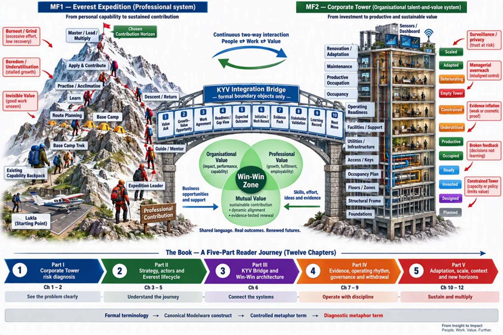
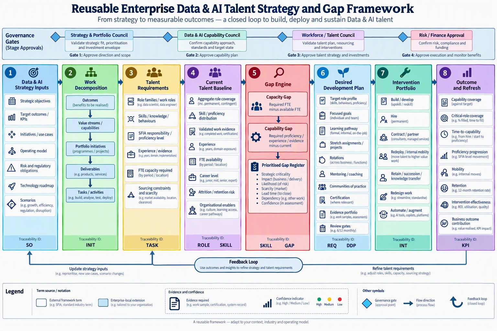

One live tenant (DLK), real learners, the smallest system that proves the model: enter the cohort, route by role, score with the corrected engine, and produce capability vectors, a private learner dashboard and an Article 4 evidence ledger — every response captured in IRT-ready shape.
The pilot runs two connected journeys. Each professional climbs their personal Mount Everest — from existing capability to sustained contribution. The organisation builds its Corporate Tower — from investment to productive, sustainable value. The KYV Integration Bridge joins them through formal boundary objects, keeping people, work and value aligned in a Win-Win Zone.

The organisational side runs on the reusable talent pipeline — strategy to measurable outcomes, a closed loop with governance gates. The pilot instances stages 1–2 (Strategy & Cohort setup) and 3–8 (assessment, gaps, development, outcomes) for DLK.

Everything in the pilot — the roles, the required capabilities, the gaps, the development — exists to serve these objectives. This is a starting point; edit it to DLK's actual strategy. Stages 1–2 of the Talent Strategy & Gap framework, connected to the cohort (stages 3–8).
Define the DLK roles and their required mastery per capability, then add the people and capture each person's self-reported level. Self-reports populate the dashboards now and are exactly what the assessment later evidences and may revise. Saved to this browser; export cohort.json to commit it as the pilot default.
The pilot routes each learner by their DLK role-context. The role sets the required capability profile; the assessment then only probes what the role needs — novices are not overwhelmed and experts are not forced through basics.
One row per administered item or submitted evidence, in the IRT-ready data contract. Modelware is the processor; DLK is the controller of this record. Fields marked IRT are the expensive-to-add-later ones captured from the first learner.
| response_pubid IRT | captured_at | learner | role / context | capability | channel | item · ver | format | raw | cat IRT | conf | review |
|---|
The Corporate Tower — turning investment into productive, sustainable value. This view is the building, not the climbers: individual results stay private.
| Capability | Context(s) | Serves | Target | Cohort coverage | Risk | Priority | Recommended intervention |
|---|
The pilot ships the corrected scoring engine. Mastery is gated, not averaged: a band requires every required channel to clear its threshold and hold a consistency floor (no single observation collapses the band through a lucky mean). The three blueprint defects are fixed and proven below on live cases run through the same engine the dashboard uses.
| Case | K | J | P | W | Old model | Corrected | State | Flags |
|---|
Mastery ladder: M1 Orient · M2 Understand · M3 Apply · M4 Operate · M5 Govern. Channels: K Knowledge · J Judgement · P Practical · W Workplace (0–5 rubric). Human review is mandatory on M3+ and anything consequential before it becomes an Assurance Record entry.